Promptly
Dynamic Prompt Middleware
2nd Place Hackathon
Promptly was published at CHIWORK 2025 and won 2nd/1,064 projects in the Everyday AI Executive Challenge as part of the 2024 MS Hackathon. Below you will find a summary of the research paper.
Abstract
Prompting generative AI effectively is challenging for users, particularly in expressing context for comprehension tasks like explaining spreadsheet formulas, Python code, and text passages. Through a formative survey (n=38), we uncovered a trade-off between standardized but predictable prompting support, and context-adaptive but unpredictable support. We explore this trade-off by implementing two prompt middleware approaches: Dynamic Prompt Refinement Controls (PRCs), which generates UI elements for prompt refinement based on the user's specific prompt, and Static PRCs, which offers generic controls.
Our controlled user study (n=16) showed that the Dynamic PRC approach afforded more control, lowered barriers to providing context, and encouraged task exploration and reflection, but reasoning about the effects of generated controls on the final output remains challenging. Our findings suggest that dynamic prompt middleware can improve the user experience of generative AI workflows.
Introduction
Prompting seems easy right? You just tell the chatbot to "Plan a workshop" and it knows exactly what you want and gives you a good response...

Well, not quite, because what you really wanted was a 3-day, in-person, machine learning workshop, etc.

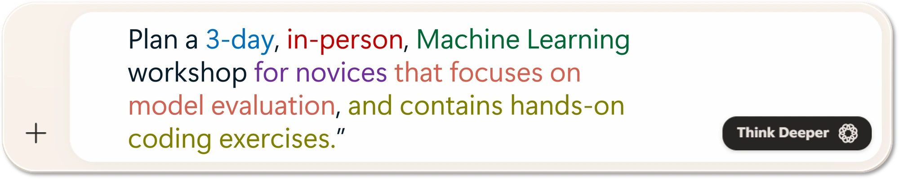
And then you wanted to go even further by telling the AI how you want it to respond. For example, the format of the response.

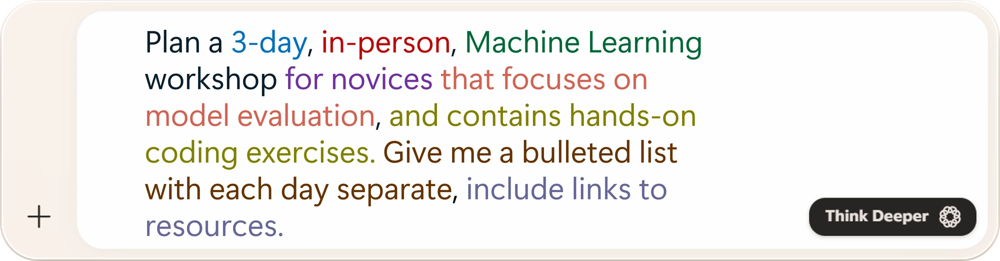
Each one of these represents context, or prompt options, that the user needs to provide to the AI to control it and get the response they need most. However, expressing this context via natural language is challenging and tedious for users to do.

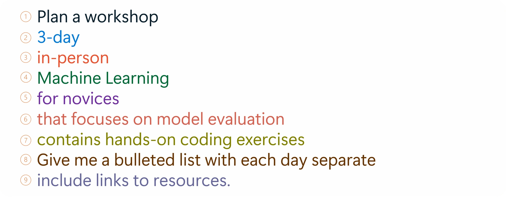
A better way... Promptly
We propose instead to generate prompt middleware customized to the user and task. Our approach instantiates a language model agent (the "Option Module") whose responsibility is to analyze the user's prompt and generate a set of options for refining that prompt. These options are rendered using graphical elements such as radio buttons, checkboxes, and free text boxes, which the user can select and edit to cause deterministic additions, removals, and modifications of their original prompt, which are passed as context to a conventional language model agent (the "Chat Module").
This not only produces a better result for the user by producing higher-detailed initial prompt, but also allows users to quickly select from alternatives to help steer the AI towards producing the best personalized response for their task.

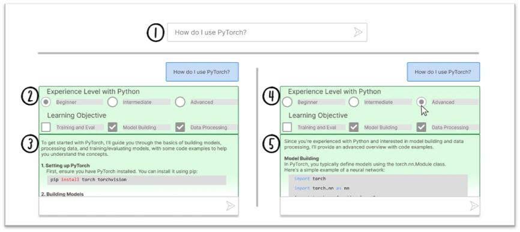
Contributions of this project
- A formative survey (n = 38) including an interactive design probe to understand user needs around customized explanations of GenAI output which found users desire greater direct control over AI responses than afforded by traditional chat interfaces, and that controls should adapt to the task and user.
- We develop two variations of an interface with graphical controls for steering AI responses, one with static controls, and one with dynamic controls that are generated based on the user's prompt. We report a second controlled, within-subjects study comparing the two interfaces (n = 16), finding that users preferred dynamic controls because they lower barriers to providing context, offer guidance for better prompts, facilitate greater exploration and reflection.
- We derive design implications for dynamic controls, such as greater control of how the AI interprets and applies options, leveraging of user context and data to generate helpful controls, and expanding dynamic prompt middleware to richer modalities.
Formative Design Probe
First, we needed to understand what to build to address this issue. So, we ran a design probe survey of 38 copilot users with the idea of a set of options that helped control AI responses as a primer to collect user needs for AI explanations.
Through these survey responses we found that users found it difficult to control AI responses due to current AI chat prompting interfaces.
Participants wanted the AI to respond in a predictable manner, and saw the control afforded by the design as a way to "tailor the experience to your specific needs" and put users in control of the AI. This led to design goal 1:

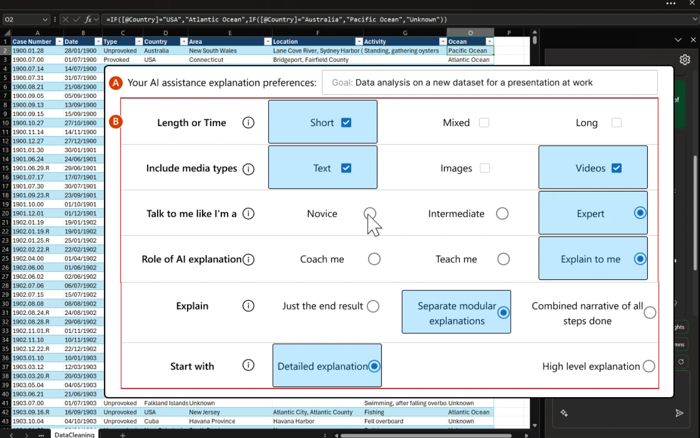
Design goal · DG1
Generative AI tools should afford users direct control of the AI's responses.
Participants also wanted options generated based on the prompt they gave AI, and wanted these options to be quick to change within the chat interface and adapted to the type of task the user was trying to accomplish. This led to design goal 2:
Design goal · DG2
Control affordances should be flexible, so users can quickly correct AI assumptions, and dynamic, so control surfaces adapt to the task and user.
Promptly Design and Implementation
Informed by the formative survey's findings, we developed Dynamic Prompt Middleware or Promptly.

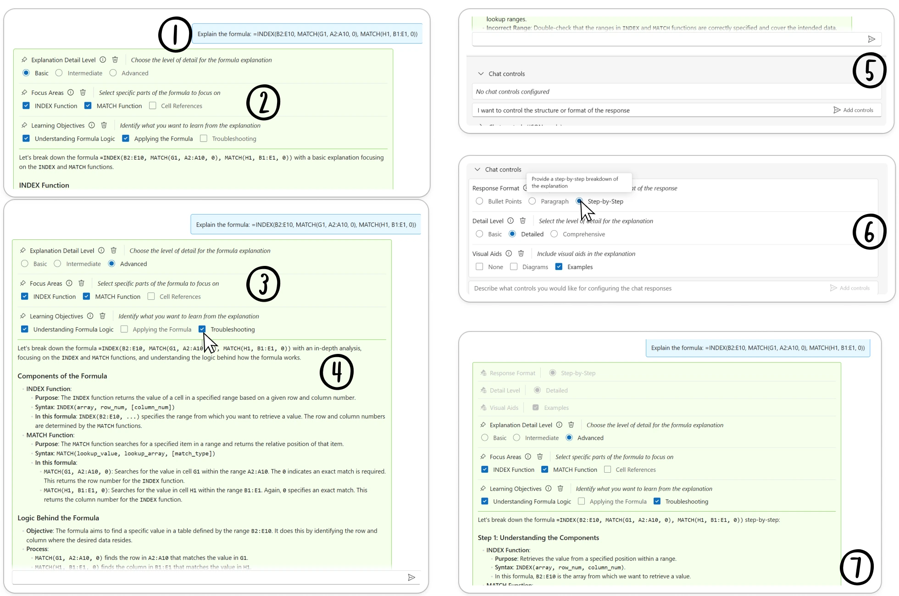
System Overview

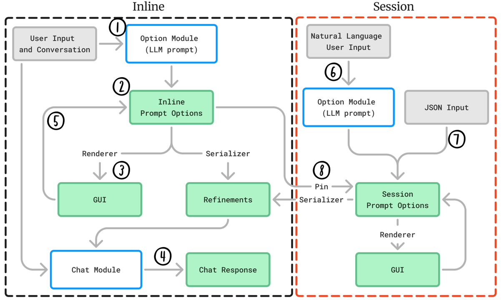
Inline:
- The Option Module takes the user's prompt input and conversation history.
- The Option Module returns a set of prompt options with initial values based on the prompt.
- Prompt options are rendered inline using a rendering engine.
- The Chat Module uses these refinements as grounding, along with the user's prompt input and conversation history, to generate a chat response.
- User can adjust GUI controls which updates the refinements and re-invokes the Chat Module to regenerate the current response.
Session:
- Users can directly invoke the Option Module to generate Session options through natural language prompting within the Session control panel.
- Users can also directly add and modify options manually through JSON input in the Session control panel.
- Users can pin Inline options to the Session by clicking the pin icon on each inline option, which applies the inline option to follow-up queries.
In-lab Comparative Study
Participants: 16 knowledge workers familiar with generative AI tools with varying experience with data analysis and programming.
Tasks: Participants completed 6 tasks, organized into 2 task-sets. Each task-set involved 3 common tasks done with GenAI assistance: code explanation, complex topic understanding, and skill learning. The goal of each task was to interact with the system to craft an explanation based on each task prompt that helped the participant understand each task and made them confident that they could answer questions about the task with the explanation.
Protocol:

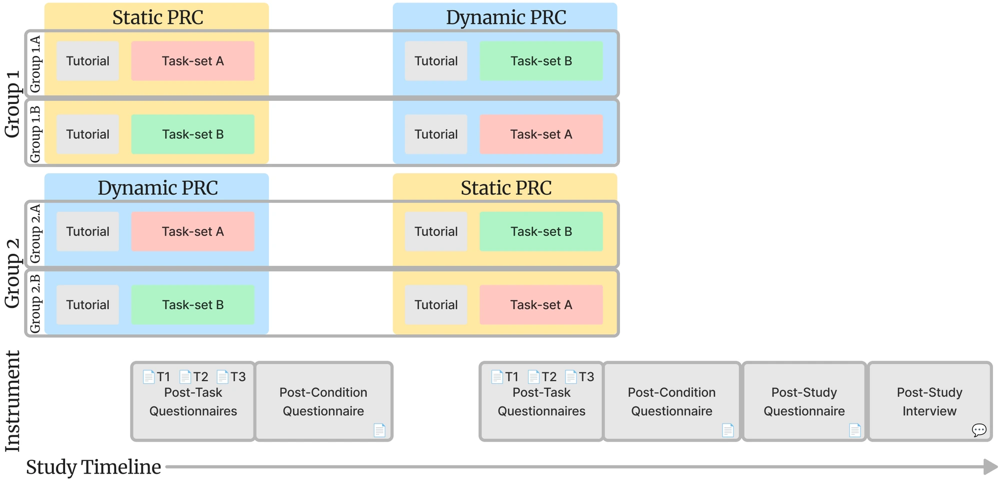
Our two conditions for this within-subjects user study were Dynamic and a Static version of the system that provided generally applicable prompt refinements which did not change between prompts or tasks. Every other element and interaction within the system was identical between conditions. We chose a within-subjects protocol so that participants could reflect on the similarities, differences, and trade-offs of using the two systems.
We did not compare Dynamic or Static systems to a 'baseline' ChatGPT or similar system, as our formative study results showed that users strongly desired control of AI-generated content, which we suspect would be replicated in the comparative tool study. Instead, we directly compare Dynamic against Static Prompt Middleware to better understand the effectiveness of different approaches of control for users, and the trade-offs of each.
Participants were assigned Dynamic and Static conditions and A and B task-sets through a counterbalanced design, such that half the participants received the Dynamic condition first, and the other half received the Static condition first. Within each of these condition-first groups, each task-set was balanced such that half of each condition saw the A task-set first, and the other half received the B task-set first. Therefore, there were four equal groups of participants during the study.

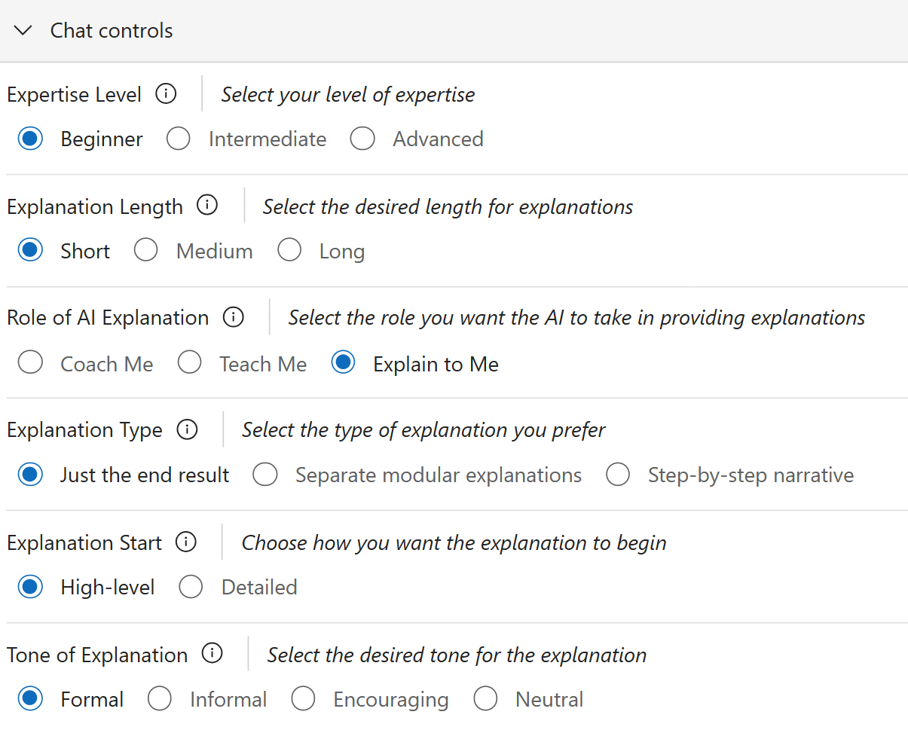
Results
User preferences for control
Participants preferred to use the Dynamic system over the Static system, as they felt it made them more successful at interacting with the AI.

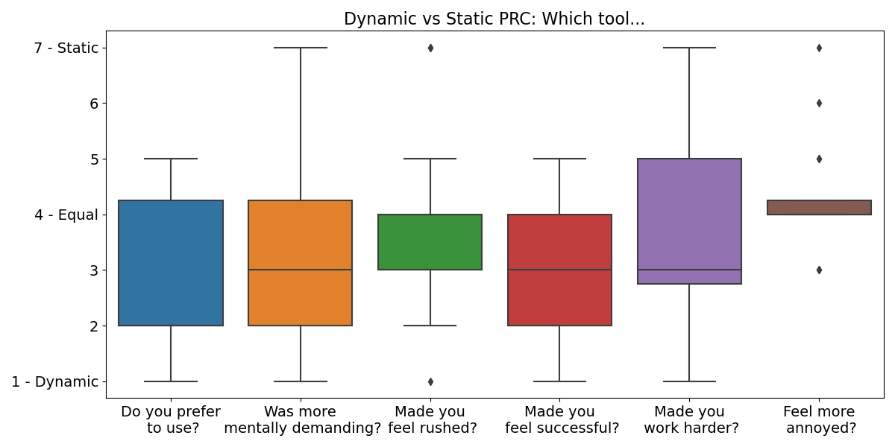
User perceived effectiveness
Participants thought the dynamic controls were more effective for controlling AI output, and were satisfied with the level of control granted vs in the static condition where many felt they still needed more control over the AI responses.

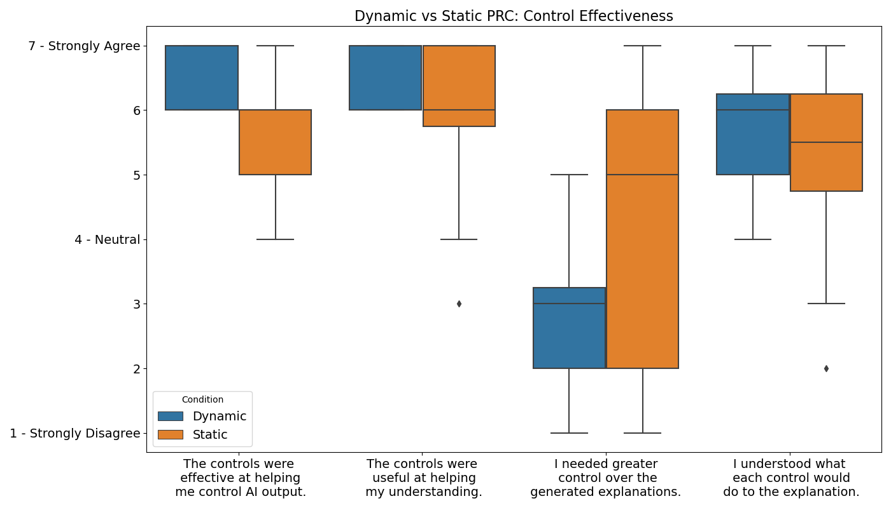
Promptly lowers barriers to providing context to AI
Current participant workflows for prompt engineering were seen as tedious, inconsistently effective, time-consuming, and a current barrier participants had with using GenAI that new control affordances, like that of the Dynamic system, could help address. Participants found it difficult to "even have the words for the context" they wanted to convey in their prompts as there was a noticeable gap in expertise needed between prompting and prompt engineering.
"I felt like [Promptly] would really help me shortcut what I'm doing manually today."
Promptly improves user perception of control over AI
Participants felt that the Dynamic system gave more effective control over the Static system and their current prompting strategies. Without the control provided by Promptly, one participant felt:
"restricted by the current Copilot [because I] don't have these options, I'm trying to modify the prompt to get the answer out and the AI just goes out of control after some time, so I have to refresh and start again and change my prompts."
The greater control afforded through generated options was seen as useful for receiving AI responses that fit the personal preferences of the user, which participants felt was made possible through Promptly's afforded flexibility, greater precision in defining the task, better predictability of AI responses, and greater adaptation to user needs.
Promptly provides guidance for AI steering interactions
Participants saw the Dynamic system as a guide in interacting with AI by providing helpful, and relevant, options. For example, one participant saw the generated options as a form of debugging the AI's response since it "gives you some ideas around if you change [the response] in this way then you might get better answers."
"[Promptly is] giving me more of a prompt learning experience, and I'm getting out of [the AI] what I want. And actually, it's a better response."
Design Implications
From our analysis of participants' reflections, we derive four implications for improving the design of Dynamic PRC systems:
-
Implication
Provide appropriate mental load to users
Dynamic PRC was found to be more mentally demanding to use over Static PRC. This might have been due to the amount of novel prompt refinements generated that the user had to attend to and understand with each prompt. One potential UX-pattern to address this is progressive disclosure, where Dynamic PRC initially only offers a few critical meta-refinements and allows the user to request that the Dynamic PRC system generates more when interested or required.
-
Implication
Gather and leverage relevant context for the user
While the current implementation of Dynamic PRC uses the user's prompt and currently selected options to generate options, participants wanted the system to leverage their past AI usage and other context or tool usage to inform the generation, and selection, of Dynamic PRC and provide greater context to the AI.
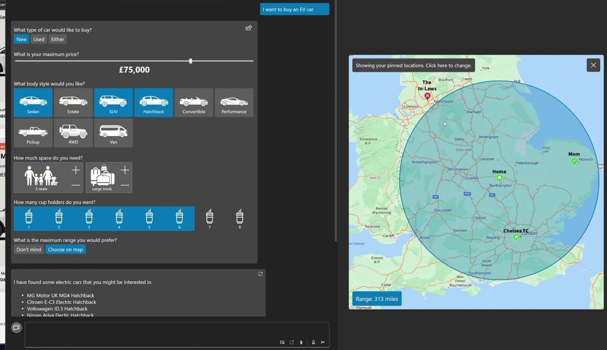
Dynamic PRC systems might also generate richer PRC modalities, like interactive maps to reveal and collect geographic needs or visual representations of options to provide the user inspiration for what kind of context the AI is looking for.
-
Implication
Provide control of how and where the AI applies options
Though participants believed the control afforded by Dynamic PRC was useful and made them more effective, they felt that more control over the application of options could help address the barriers that remain. Participants noted a need for greater transparency on how the AI interprets the options selected and prompt given to the AI.
-
Implication
Provide direct manipulation to update options
While it was uncommon for participants to want to modify the generated Dynamic PRC options during the study, some felt the need to directly update options. The Dynamic PRC system can be improved to allow users to update parts of the UI to send these modifications to the Option Module as user intent, supporting a form of response-by-example similar to programming-by-example interfaces.